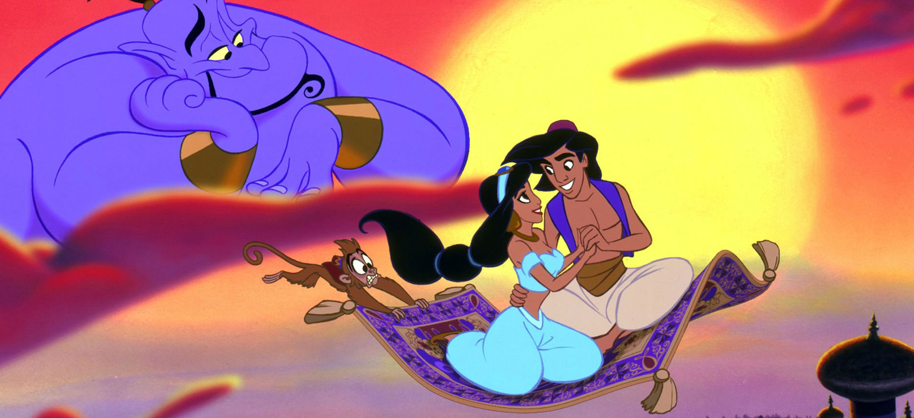

C'est l'histoire des Rêves d'un Empreur...

Tout à commencé lors d'une simple rencontre anodine; Une rencontre qui fut magique, est qui alla bouleverser à jamais la vie du bel Empreur et de la belle Princesse de Tetouane
La Princesse était aussi belle que mystérieuse, aussi indomptable que sauvage, sa beauté n'avait d'égale que son sourire, mais son coeur a cédé lorsqu'elle a plongé ses yeux dans ceux de l'Empreur. Il avait eu le don de calmer la Princesse, rien qu'en le regardant elle s'appaisa et elle commenca à ressentir un sentiment qu'elle eu jamais connue.
L'Empreur lui était fort est vaillant, courageux, et épurdément séduisant, rien n'y personne n'arriva à le séduire. Jusqu'à sa rencontre avec cette Princesse aux yeux envoutant... Lui aussi il n'a pu contenir n'y expliqué cette nouvelle sensation qui remplis son être.
...Le début de tout...
12/11/1995
Ce fut la naissance des plus belles des Princesses. On lui attribua un prénom de "rêve", un prénom aussi magique que difficile à prononcé pour notre jeune Empreur. On déclara 40 jours et 40 nuits de fêtes dans tout le Royaume.
07/07/1994
Ce jour la un bébé ordinaire naissa, un garçons comme les autres, un garcons tout à fait ordinaire, excepté son grand coeur qu'il hérita très certainement de sa mère. On lui offri comme pénom un synonyme d'Empreur..
24/10/2017
Un jour pas comme les autre débuta, une rencontre pas comme les autres arriva, une histoire pas comme les autres commenca...